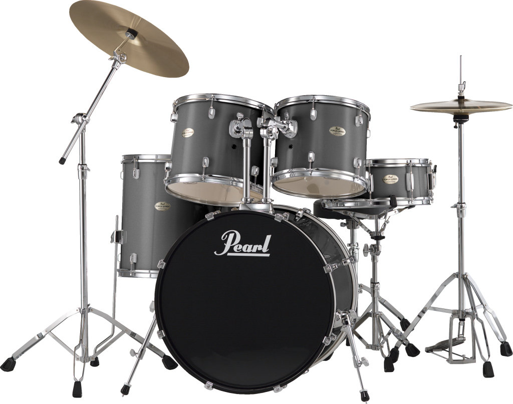

Pearl es una empresa multinacional japonesa, que fabrica varios productos
musicales, entre los cuales destaca la batería
La empresa entró en funcionamiento el 2 de abril de 1946, en la ciudad de Tokio, gracias a Katsumi Yamagisawa. En 1957, el hijo
mayor de Katsumi fue el responsable de la expansión de la compañía. Hoy en día, Pearl suministra equipamiento para personas
tales como: Joey Jordison (Slipknot), André Mattos (Trazendo a Arca),1 2 y Chad Smith (Red Hot Chili Peppers), entre otros
músicos.
Pearl Drums es una marca que sin duda alguna ha dejado una importante huella en la historia de la música, ya que lleva más de
cinco décadas produciendo baterías y percusiones con la mejor acústica y una increíble durabilidad. Son muchos los músicos
profesionales que prefieren tocar instrumentos y accesorios fabricados por esta empresa japonesa, ya que la calidad y el
prestigiode esta compañía es reconocida en el mundo entero. Grupos famosos en la historia del rock como Red Hot Chili Peppers,
Deep Purple, Kiss y Dream Theater han utilizado los productos de Pearl Drums, con lo que esta marca se ha consolidado como líde
en el mercado de instrumentos musicales. Si deseas conocer más sobre el catálogo de esta marca, existen diferentes tiendas
online que ofrecen sus productos a excelentes precios.
bueno chavos aqui les pongo unos modelos de los drums

para mayor informacion consulta este link
da click aqui